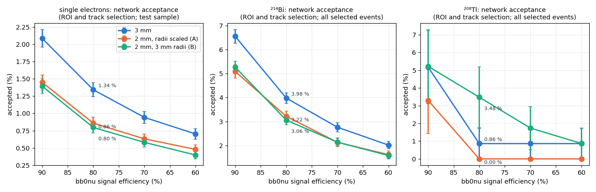
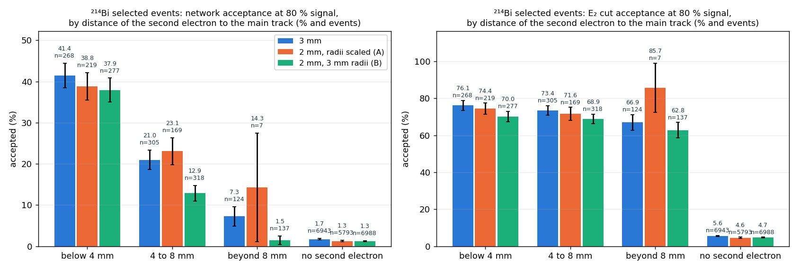

1. Settings
Detector of II_L1000_D500 (1.0 m drift, 500 V/cm, 20.0 cm/s). The 2 mm readout uses the VH1 card with 10 ms frames; hits are saved above 3 keV in both pitches. Setting A scales the radii of the selection to the 2 mm lattice; setting B keeps the radii of the 3 mm selection. Both 2 mm settings use a hit cut of 3 keV: at 5 keV the smaller cells break the track.
| Setting | Run prefix | Hit cut | Components | Segment | Segments joined | Graph cells | Detached deposit | Endpoint sphere |
|---|---|---|---|---|---|---|---|---|
| 3 mm | II_L1000_D500 | 5 keV | 5.5 mm | 6 hits | 8 mm | 3 mm | 10 keV | 7 mm |
| 2 mm, radii scaled (A) | II_L1000_D500_P2 | 3 keV | 3.7 mm | 9 hits | 5.3 mm | 2 mm | 10 keV | 7 mm |
| 2 mm, 3 mm radii (B) | II_L1000_D500_P2_R3 | 3 keV | 5.5 mm | 9 hits | 8 mm | 2 mm | 10 keV | 7 mm |
2. Summary at 80 % signal
Acceptances are fractions of the events in the ROI that pass the track selection of each setting; single electrons for the network are those of its test sample; errors are binomial.
| At 80 % signal | 3 mm | 2 mm, radii scaled (A) | 2 mm, 3 mm radii (B) |
|---|---|---|---|
| bb0nu after ROI and track selection | 106,957 (70.1 % of the ROI) | 101,454 (66.5 % of the ROI) | 107,249 (70.3 % of the ROI) |
| single electrons, network | 1.34 ± 0.10 % (168 of 12,523) | 0.86 ± 0.08 % (102 of 11,872) | 0.80 ± 0.08 % (100 of 12,559) |
| ²¹⁴Bi, network | 3.98 ± 0.22 % (304 of 7,640) | 3.22 ± 0.22 % (199 of 6,188) | 3.06 ± 0.20 % (236 of 7,720) |
| ²⁰⁸Tl, network | 0.86 ± 0.86 % (1 of 116) | 0.00 ± 0.00 % (0 of 91) | 3.48 ± 1.71 % (4 of 115) |
| single electrons, E₂ cut | 6.04 ± 0.08 % | 4.74 ± 0.07 % | 4.89 ± 0.07 % |
| ²¹⁴Bi, E₂ cut | 11.78 ± 0.37 % | 9.02 ± 0.36 % | 10.67 ± 0.35 % |
| ²⁰⁸Tl, E₂ cut | 12.07 ± 3.02 % | 5.49 ± 2.39 % | 11.30 ± 2.95 % |
| ²¹⁴Bi over single electrons, network | 2.97 | 3.74 | 3.84 |
| Network: area under the curve (test sample) | 0.9857 | 0.9894 | 0.9900 |
3. Cut flow
| Sample | Step | 3 mm | 2 mm, radii scaled (A) | 2 mm, 3 mm radii (B) |
|---|---|---|---|---|
| bb0nu | Generated in Geant4 | 300,000 | 300,000 | 300,000 |
| In the input files | 254,088 | 254,088 | 254,088 | |
| Accepted by the fast trigger | 202,056 | 202,056 | 202,056 | |
| Event energy in the ROI | 152,576 | 152,576 | 152,576 | |
| Track selection | 106,957 | 101,454 | 107,249 | |
| single electrons | Generated in Geant4 | 300,000 | 300,000 | 300,000 |
| In the input files | 234,161 | 234,161 | 234,161 | |
| Accepted by the fast trigger | 177,651 | 177,651 | 177,651 | |
| Event energy in the ROI | 134,243 | 134,243 | 134,243 | |
| Track selection | 92,908 | 87,858 | 93,148 | |
| ²¹⁴Bi | Generated in Geant4 | 40,000,000 | 40,000,000 | 40,000,000 |
| In the input files | 1,271,276 | 1,271,276 | 1,271,276 | |
| Accepted by the fast trigger | 162,982 | 162,982 | 162,982 | |
| Event energy in the ROI | 31,641 | 31,641 | 31,641 | |
| Track selection | 7,640 | 6,188 | 7,720 | |
| ²⁰⁸Tl | Generated in Geant4 | 40,000,000 | 40,000,000 | 40,000,000 |
| In the input files | 434,083 | 434,083 | 434,083 | |
| Accepted by the fast trigger | 143,302 | 143,302 | 143,302 | |
| Event energy in the ROI | 715 | 715 | 715 | |
| Track selection | 116 | 91 | 115 |
4. Cut on E₂ and network
The E₂ threshold and the network threshold of each setting give the stated bb0nu efficiency on its own selected events (the network on its test sample). Each network is a sparse residual network on the itrack, trained for 100 epochs on bb0nu against single electrons of that setting (validation batches 8–13, test batches 0–7).
| Signal efficiency | Sample | 3 mm | 2 mm, radii scaled (A) | 2 mm, 3 mm radii (B) |
|---|---|---|---|---|
| 90 % | threshold | E₂ > 128 keV · score > 2.05 | E₂ > 142 keV · score > 2.21 | E₂ > 135 keV · score > 2.24 |
| single electrons | E₂ 11.04 ± 0.10 % · network 2.08 ± 0.13 % | E₂ 8.51 ± 0.09 % · network 1.45 ± 0.11 % | E₂ 9.19 ± 0.09 % · network 1.39 ± 0.10 % | |
| ²¹⁴Bi | E₂ 17.23 ± 0.43 % · network 6.56 ± 0.28 % | E₂ 13.59 ± 0.44 % · network 5.09 ± 0.28 % | E₂ 16.13 ± 0.42 % · network 5.27 ± 0.25 % | |
| ²⁰⁸Tl | E₂ 19.83 ± 3.70 % · network 5.17 ± 2.06 % | E₂ 13.19 ± 3.55 % · network 3.30 ± 1.87 % | E₂ 20.87 ± 3.79 % · network 5.22 ± 2.07 % | |
| 80 % | threshold | E₂ > 178 keV · score > 3.23 | E₂ > 210 keV · score > 3.25 | E₂ > 203 keV · score > 3.32 |
| single electrons | E₂ 6.04 ± 0.08 % · network 1.34 ± 0.10 % | E₂ 4.74 ± 0.07 % · network 0.86 ± 0.08 % | E₂ 4.89 ± 0.07 % · network 0.80 ± 0.08 % | |
| ²¹⁴Bi | E₂ 11.78 ± 0.37 % · network 3.98 ± 0.22 % | E₂ 9.02 ± 0.36 % · network 3.22 ± 0.22 % | E₂ 10.67 ± 0.35 % · network 3.06 ± 0.20 % | |
| ²⁰⁸Tl | E₂ 12.07 ± 3.02 % · network 0.86 ± 0.86 % | E₂ 5.49 ± 2.39 % · network 0.00 ± 0.00 % | E₂ 11.30 ± 2.95 % · network 3.48 ± 1.71 % | |
| 70 % | threshold | E₂ > 235 keV · score > 3.88 | E₂ > 278 keV · score > 3.84 | E₂ > 272 keV · score > 3.98 |
| single electrons | E₂ 3.81 ± 0.06 % · network 0.94 ± 0.09 % | E₂ 3.30 ± 0.06 % · network 0.63 ± 0.07 % | E₂ 3.32 ± 0.06 % · network 0.58 ± 0.07 % | |
| ²¹⁴Bi | E₂ 8.38 ± 0.32 % · network 2.76 ± 0.19 % | E₂ 6.11 ± 0.30 % · network 2.13 ± 0.18 % | E₂ 6.94 ± 0.29 % · network 2.14 ± 0.16 % | |
| ²⁰⁸Tl | E₂ 7.76 ± 2.48 % · network 0.86 ± 0.86 % | E₂ 2.20 ± 1.54 % · network 0.00 ± 0.00 % | E₂ 6.09 ± 2.23 % · network 1.74 ± 1.22 % | |
| 60 % | threshold | E₂ > 288 keV · score > 4.34 | E₂ > 317 keV · score > 4.29 | E₂ > 314 keV · score > 4.46 |
| single electrons | E₂ 2.78 ± 0.05 % · network 0.70 ± 0.07 % | E₂ 2.56 ± 0.05 % · network 0.48 ± 0.06 % | E₂ 2.57 ± 0.05 % · network 0.40 ± 0.06 % | |
| ²¹⁴Bi | E₂ 5.34 ± 0.26 % · network 2.02 ± 0.16 % | E₂ 4.44 ± 0.26 % · network 1.62 ± 0.16 % | E₂ 4.87 ± 0.24 % · network 1.58 ± 0.14 % | |
| ²⁰⁸Tl | E₂ 4.31 ± 1.89 % · network 0.86 ± 0.86 % | E₂ 2.20 ± 1.54 % · network 0.00 ± 0.00 % | E₂ 6.09 ± 2.23 % · network 0.87 ± 0.87 % |

5. ²¹⁴Bi by Monte Carlo truth
Truth of the selected ²¹⁴Bi events of each setting (prepare_iitaca_truth.jl, summarize_iitaca_truth.jl). The second electron is the most energetic Compton electron, photoelectron other than the leading electron, or positron with at least 10 keV in the simulated box; its distance is the smallest distance between its hits and the main-track hits. Selected events common to two settings: 2 mm, radii scaled (A) and 2 mm, 3 mm radii (B): 6,188; 3 mm and 2 mm, radii scaled (A): 6,141; 3 mm and 2 mm, 3 mm radii (B): 7,254.
Interaction history of the gamma
| ²¹⁴Bi group | Signal efficiency | 3 mm | 2 mm, radii scaled (A) | 2 mm, 3 mm radii (B) |
|---|---|---|---|---|
| photoelectric absorption only | 90 % | 6943 events · E₂ 10.9 ± 0.4 % · network 2.4 ± 0.2 % | 5793 events · E₂ 8.9 ± 0.4 % · network 1.8 ± 0.2 % | 6988 events · E₂ 9.5 ± 0.4 % · network 1.8 ± 0.2 % |
| 80 % | 6943 events · E₂ 5.6 ± 0.3 % · network 1.7 ± 0.2 % | 5793 events · E₂ 4.6 ± 0.3 % · network 1.3 ± 0.1 % | 6988 events · E₂ 4.7 ± 0.3 % · network 1.3 ± 0.1 % | |
| 70 % | 6943 events · E₂ 3.3 ± 0.2 % · network 1.2 ± 0.1 % | 5793 events · E₂ 3.3 ± 0.2 % · network 0.9 ± 0.1 % | 6988 events · E₂ 3.1 ± 0.2 % · network 0.9 ± 0.1 % | |
| 60 % | 6943 events · E₂ 2.3 ± 0.2 % · network 0.9 ± 0.1 % | 5793 events · E₂ 2.4 ± 0.2 % · network 0.7 ± 0.1 % | 6988 events · E₂ 2.3 ± 0.2 % · network 0.6 ± 0.1 % | |
| Compton scattering(s), then absorption or escape | 90 % | 697 events · E₂ 80.2 ± 1.5 % · network 47.8 ± 1.9 % | 395 events · E₂ 82.8 ± 1.9 % · network 52.7 ± 2.5 % | 732 events · E₂ 79.1 ± 1.5 % · network 38.4 ± 1.8 % |
| 80 % | 697 events · E₂ 73.3 ± 1.7 % · network 26.4 ± 1.7 % | 395 events · E₂ 73.4 ± 2.2 % · network 31.6 ± 2.3 % | 732 events · E₂ 68.2 ± 1.7 % · network 20.2 ± 1.5 % | |
| 70 % | 697 events · E₂ 59.4 ± 1.9 % · network 18.5 ± 1.5 % | 395 events · E₂ 47.8 ± 2.5 % · network 20.3 ± 2.0 % | 732 events · E₂ 43.2 ± 1.8 % · network 14.2 ± 1.3 % | |
| 60 % | 697 events · E₂ 35.7 ± 1.8 % · network 13.2 ± 1.3 % | 395 events · E₂ 34.4 ± 2.4 % · network 14.9 ± 1.8 % | 732 events · E₂ 29.5 ± 1.7 % · network 11.2 ± 1.2 % |
Distance of the second electron
| ²¹⁴Bi group | Signal efficiency | 3 mm | 2 mm, radii scaled (A) | 2 mm, 3 mm radii (B) |
|---|---|---|---|---|
| second electron below 4 mm | 90 % | 268 events · E₂ 81.7 ± 2.4 % · network 62.7 ± 3.0 % | 219 events · E₂ 83.1 ± 2.5 % · network 60.3 ± 3.3 % | 277 events · E₂ 79.4 ± 2.4 % · network 60.3 ± 2.9 % |
| 80 % | 268 events · E₂ 76.1 ± 2.6 % · network 41.4 ± 3.0 % | 219 events · E₂ 74.4 ± 2.9 % · network 38.8 ± 3.3 % | 277 events · E₂ 70.0 ± 2.8 % · network 37.9 ± 2.9 % | |
| 70 % | 268 events · E₂ 65.7 ± 2.9 % · network 31.3 ± 2.8 % | 219 events · E₂ 53.0 ± 3.4 % · network 26.9 ± 3.0 % | 277 events · E₂ 51.3 ± 3.0 % · network 26.0 ± 2.6 % | |
| 60 % | 268 events · E₂ 43.3 ± 3.0 % · network 24.3 ± 2.6 % | 219 events · E₂ 40.6 ± 3.3 % · network 20.5 ± 2.7 % | 277 events · E₂ 38.3 ± 2.9 % · network 20.6 ± 2.4 % | |
| second electron 4 to 8 mm | 90 % | 305 events · E₂ 80.3 ± 2.3 % · network 47.2 ± 2.9 % | 169 events · E₂ 81.7 ± 3.0 % · network 43.8 ± 3.8 % | 318 events · E₂ 79.2 ± 2.3 % · network 32.7 ± 2.6 % |
| 80 % | 305 events · E₂ 73.4 ± 2.5 % · network 21.0 ± 2.3 % | 169 events · E₂ 71.6 ± 3.5 % · network 23.1 ± 3.2 % | 318 events · E₂ 68.9 ± 2.6 % · network 12.9 ± 1.9 % | |
| 70 % | 305 events · E₂ 59.0 ± 2.8 % · network 13.1 ± 1.9 % | 169 events · E₂ 42.6 ± 3.8 % · network 12.4 ± 2.5 % | 318 events · E₂ 39.6 ± 2.7 % · network 9.4 ± 1.6 % | |
| 60 % | 305 events · E₂ 33.4 ± 2.7 % · network 7.9 ± 1.5 % | 169 events · E₂ 27.2 ± 3.4 % · network 8.3 ± 2.1 % | 318 events · E₂ 23.3 ± 2.4 % · network 7.5 ± 1.5 % | |
| second electron beyond 8 mm | 90 % | 124 events · E₂ 76.6 ± 3.8 % · network 16.9 ± 3.4 % | 7 events · E₂ 100.0 ± 0.0 % · network 28.6 ± 17.1 % | 137 events · E₂ 78.1 ± 3.5 % · network 7.3 ± 2.2 % |
| 80 % | 124 events · E₂ 66.9 ± 4.2 % · network 7.3 ± 2.3 % | 7 events · E₂ 85.7 ± 13.2 % · network 14.3 ± 13.2 % | 137 events · E₂ 62.8 ± 4.1 % · network 1.5 ± 1.0 % | |
| 70 % | 124 events · E₂ 46.8 ± 4.5 % · network 4.0 ± 1.8 % | 7 events · E₂ 14.3 ± 13.2 % · network 0.0 ± 14.3 % | 137 events · E₂ 35.0 ± 4.1 % · network 1.5 ± 1.0 % | |
| 60 % | 124 events · E₂ 25.0 ± 3.9 % · network 2.4 ± 1.4 % | 7 events · E₂ 14.3 ± 13.2 % · network 0.0 ± 14.3 % | 137 events · E₂ 26.3 ± 3.8 % · network 0.7 ± 0.7 % | |
| no second electron of 10 keV or more | 90 % | 6943 events · E₂ 10.9 ± 0.4 % · network 2.4 ± 0.2 % | 5793 events · E₂ 8.9 ± 0.4 % · network 1.8 ± 0.2 % | 6988 events · E₂ 9.5 ± 0.4 % · network 1.8 ± 0.2 % |
| 80 % | 6943 events · E₂ 5.6 ± 0.3 % · network 1.7 ± 0.2 % | 5793 events · E₂ 4.6 ± 0.3 % · network 1.3 ± 0.1 % | 6988 events · E₂ 4.7 ± 0.3 % · network 1.3 ± 0.1 % | |
| 70 % | 6943 events · E₂ 3.3 ± 0.2 % · network 1.2 ± 0.1 % | 5793 events · E₂ 3.3 ± 0.2 % · network 0.9 ± 0.1 % | 6988 events · E₂ 3.1 ± 0.2 % · network 0.9 ± 0.1 % | |
| 60 % | 6943 events · E₂ 2.3 ± 0.2 % · network 0.9 ± 0.1 % | 5793 events · E₂ 2.4 ± 0.2 % · network 0.7 ± 0.1 % | 6988 events · E₂ 2.3 ± 0.2 % · network 0.6 ± 0.1 % |

6. Rejection factors
For each step: bb0nu kept at the step and since generation; for the backgrounds, events before the step over events after it, and generated events over events after it. The network and E₂ rows follow the track selection; for single electrons the network acceptance is that of the test sample.
3 mm
| Step | bb0nu kept: step · cumulative | single electrons rejection: step · cumulative | ²¹⁴Bi rejection: step · cumulative | ²⁰⁸Tl rejection: step · cumulative |
|---|---|---|---|---|
| In the input files | 84.7 % · 84.7 % | 1.28 · 1.28 | 31.5 · 31.5 | 92.1 · 92.1 |
| Accepted by the fast trigger | 79.5 % · 67.4 % | 1.32 · 1.69 | 7.8 · 245 | 3.03 · 279 |
| Event energy in the ROI | 75.5 % · 50.9 % | 1.32 · 2.23 | 5.15 · 1.26e+03 | 200 · 5.59e+04 |
| Track selection | 70.1 % · 35.7 % | 1.44 · 3.23 | 4.14 · 5.24e+03 | 6.16 · 3.45e+05 |
| E₂ cut at 80 % signal | 80.0 % · 28.5 % | 16.6 · 53.5 | 8.49 · 4.44e+04 | 8.29 · 2.86e+06 |
| network at 80 % signal | 80.0 % · 28.5 % | 74.5 · 241 | 25.1 · 1.32e+05 | 116 · 4e+07 |
2 mm, radii scaled (A)
| Step | bb0nu kept: step · cumulative | single electrons rejection: step · cumulative | ²¹⁴Bi rejection: step · cumulative | ²⁰⁸Tl rejection: step · cumulative |
|---|---|---|---|---|
| In the input files | 84.7 % · 84.7 % | 1.28 · 1.28 | 31.5 · 31.5 | 92.1 · 92.1 |
| Accepted by the fast trigger | 79.5 % · 67.4 % | 1.32 · 1.69 | 7.8 · 245 | 3.03 · 279 |
| Event energy in the ROI | 75.5 % · 50.9 % | 1.32 · 2.23 | 5.15 · 1.26e+03 | 200 · 5.59e+04 |
| Track selection | 66.5 % · 33.8 % | 1.53 · 3.41 | 5.11 · 6.46e+03 | 7.86 · 4.4e+05 |
| E₂ cut at 80 % signal | 80.0 % · 27.1 % | 21.1 · 72 | 11.1 · 7.17e+04 | 18.2 · 8e+06 |
| network at 80 % signal | 80.0 % · 27.1 % | 116 · 397 | 31.1 · 2.01e+05 | — (no event accepted) |
2 mm, 3 mm radii (B)
| Step | bb0nu kept: step · cumulative | single electrons rejection: step · cumulative | ²¹⁴Bi rejection: step · cumulative | ²⁰⁸Tl rejection: step · cumulative |
|---|---|---|---|---|
| In the input files | 84.7 % · 84.7 % | 1.28 · 1.28 | 31.5 · 31.5 | 92.1 · 92.1 |
| Accepted by the fast trigger | 79.5 % · 67.4 % | 1.32 · 1.69 | 7.8 · 245 | 3.03 · 279 |
| Event energy in the ROI | 75.5 % · 50.9 % | 1.32 · 2.23 | 5.15 · 1.26e+03 | 200 · 5.59e+04 |
| Track selection | 70.3 % · 35.7 % | 1.44 · 3.22 | 4.1 · 5.18e+03 | 6.22 · 3.48e+05 |
| E₂ cut at 80 % signal | 80.0 % · 28.6 % | 20.5 · 65.9 | 9.37 · 4.85e+04 | 8.85 · 3.08e+06 |
| network at 80 % signal | 80.0 % · 28.6 % | 126 · 404 | 32.7 · 1.69e+05 | 28.8 · 1e+07 |
Numerical results: comparison.h5 (scripts/iitaca/prepare_iitaca_pitch_comparison.jl); page: scripts/iitaca/present_iitaca_pitch_comparison.py.